Religiosos
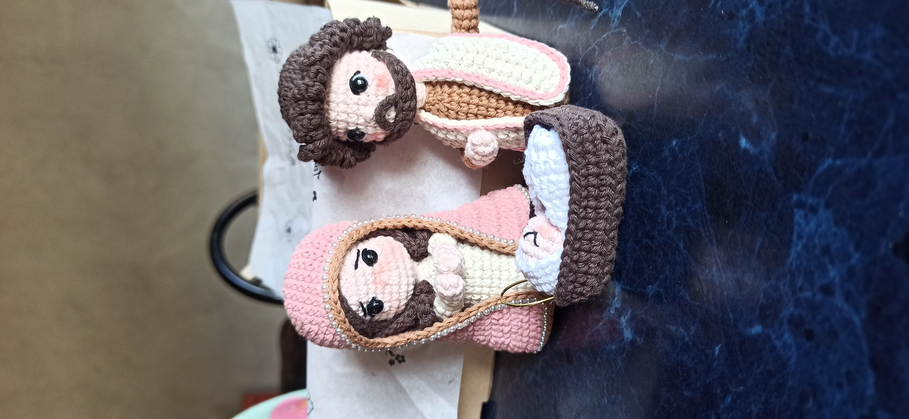
Pesebre
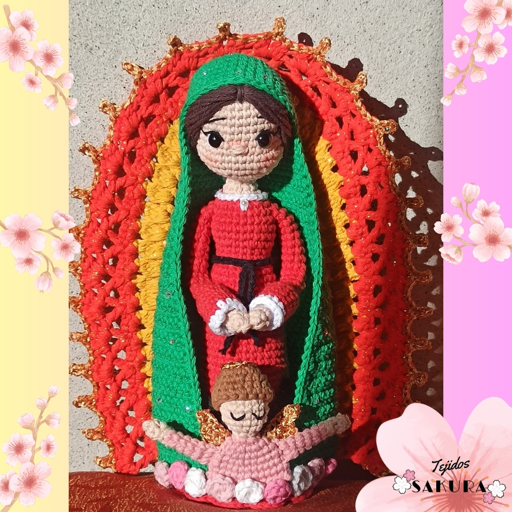
Virgen de Guadalupe
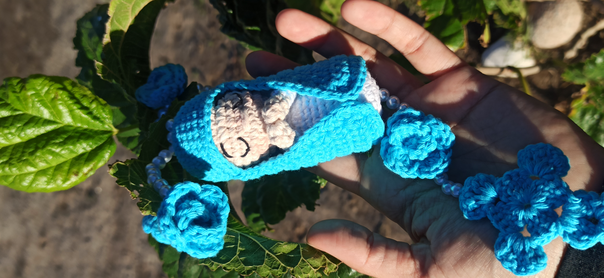
Virgencita
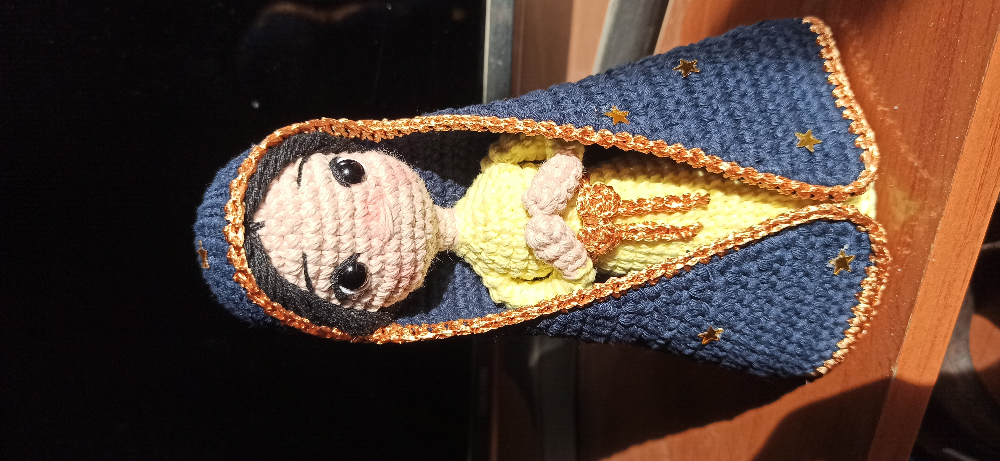
Virgen
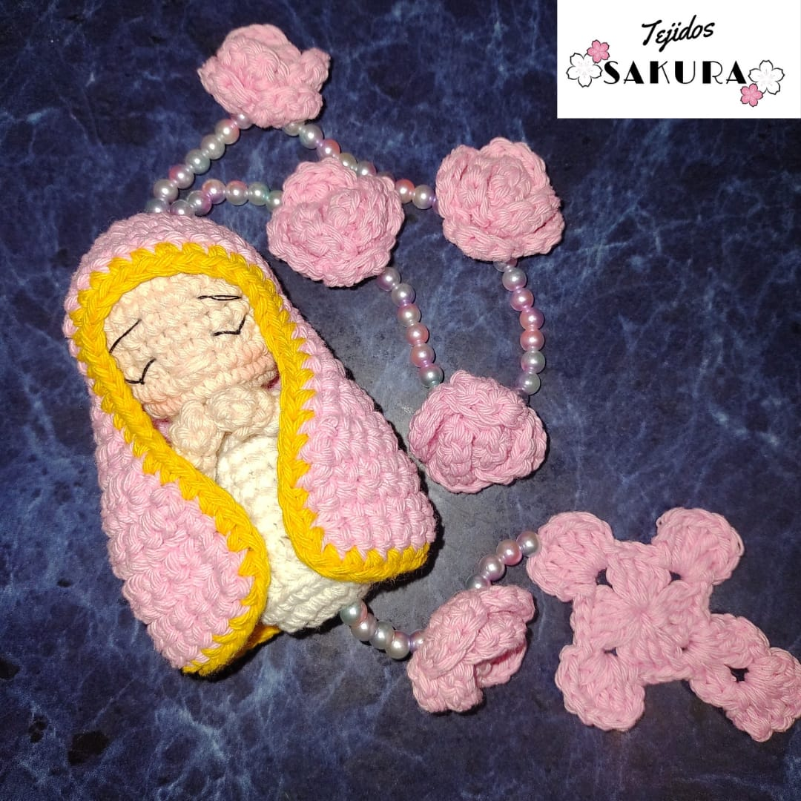
Virgencita con rosario
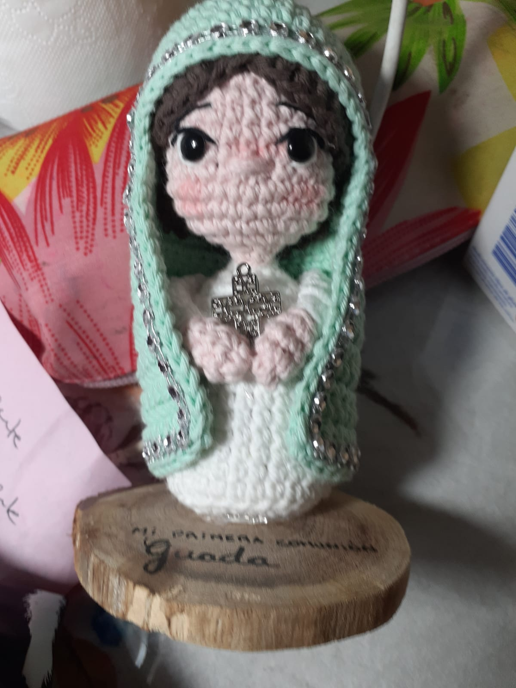
Virgencita
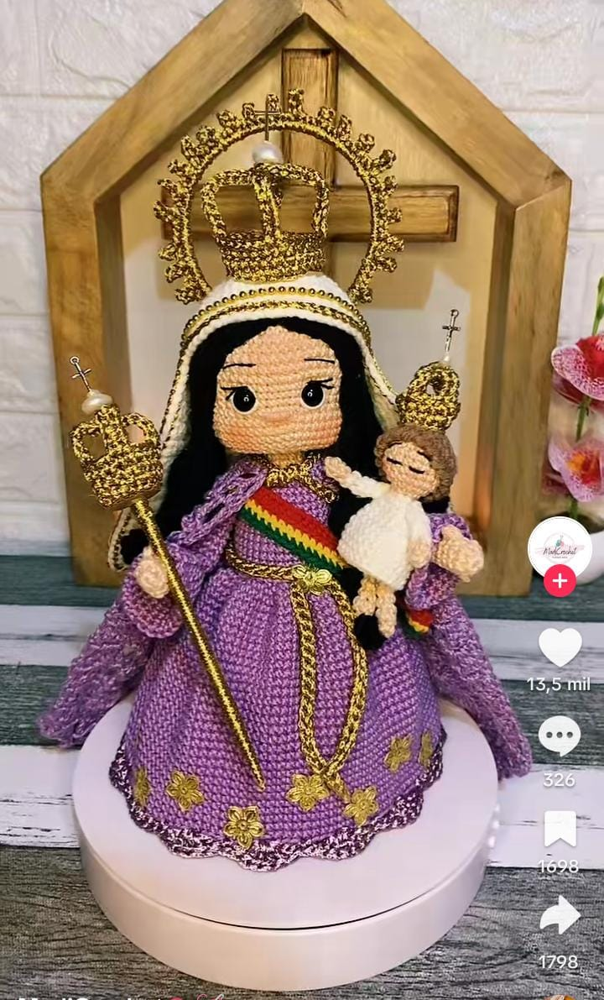
Virgen de Urkupiña
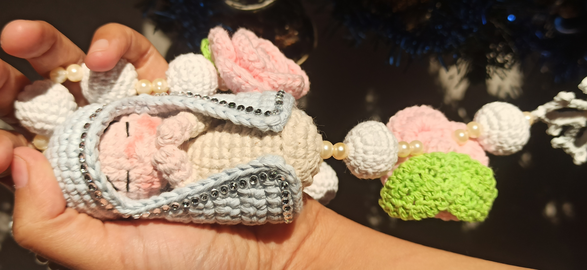
Denario
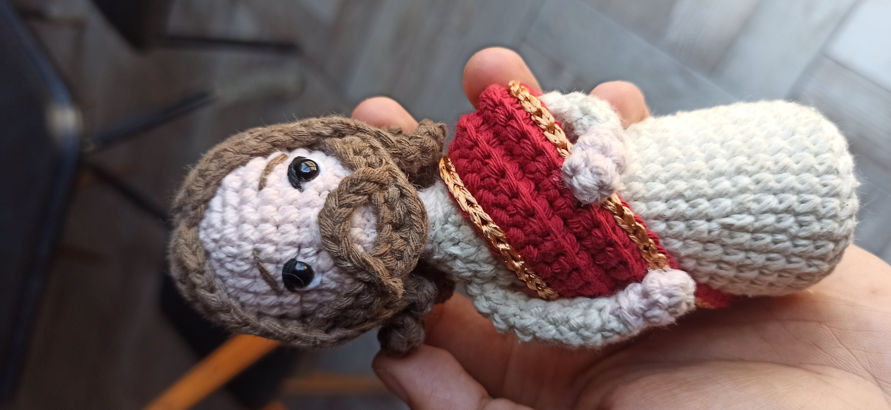
Mini Jesús
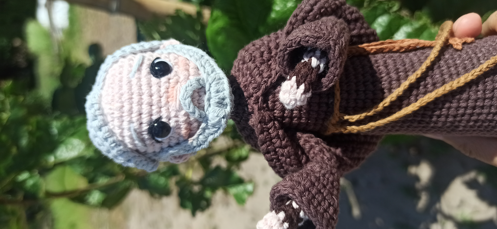
Padre Pio
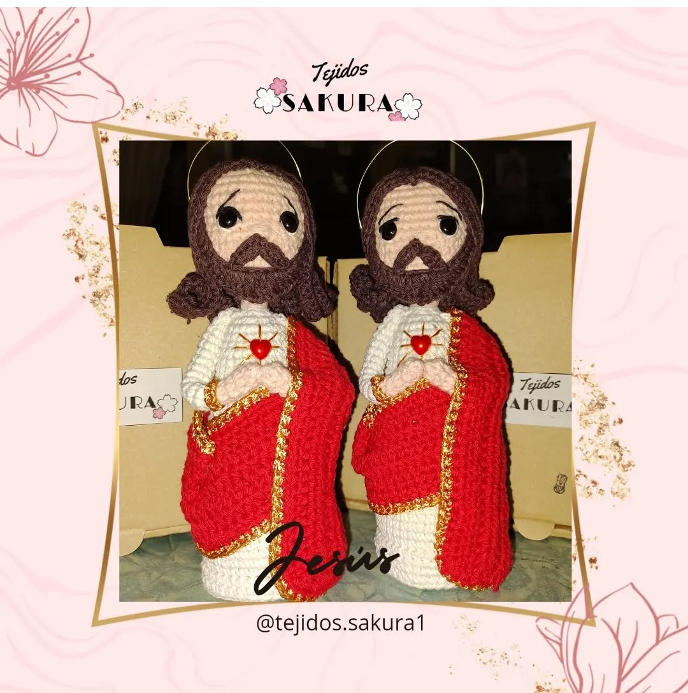
Sagrado Corazón de Jesús
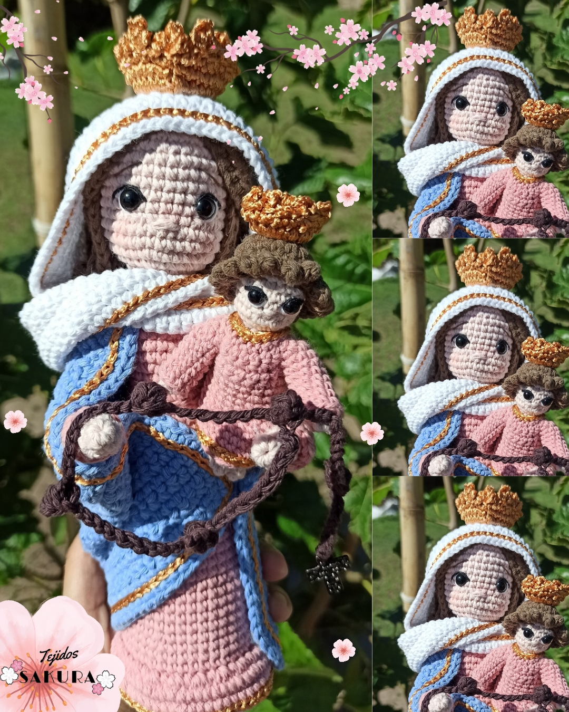
Virgen de San Nicolas
Volver